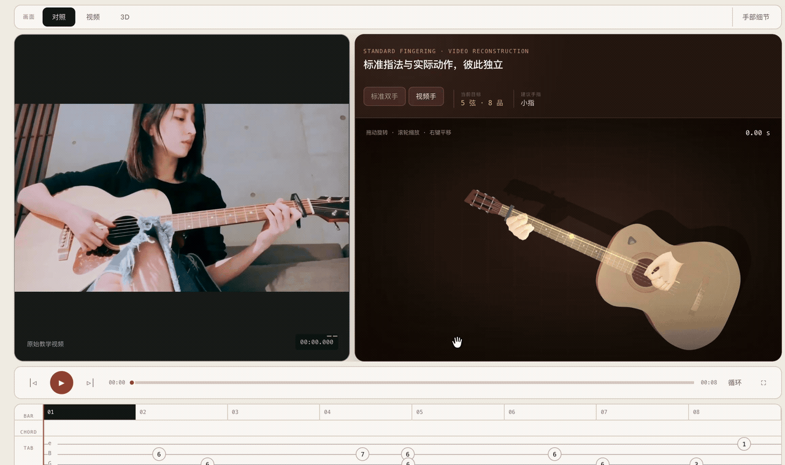

EMBODIED NAVIGATION
SuperNav: An Agentic Navigation System for Any Task in Any Scene
Multimodal reasoning and tool use for navigation across different tasks and environments.
Project01 / PROFILE
ZJU · Turing Class
Hello! I am Zhang Jinkai, currently a senior at Zhejiang University, Turing Class, majoring in Computer Science and Technology.
I am currently a research intern at ZJU3DV, advised by Prof. Sida Peng and Prof. Xiaowei Zhou. My research focuses on embodied intelligence.
02 / RESEARCH PROJECTS
EMBODIED NAVIGATION
Multimodal reasoning and tool use for navigation across different tasks and environments.
Project03 / PERSONAL PROJECTS
MOTION & LEARNING
A 3D movement coach
Turn video motion into 3D demonstrations, with real-time practice, motion scoring, and AI feedback.
Code
MUSIC & INTERACTION
From watching to playing
Synchronize tutorial videos, guitar tabs, and 3D hand movements to make finger positions and playing techniques easier to follow.
View demo